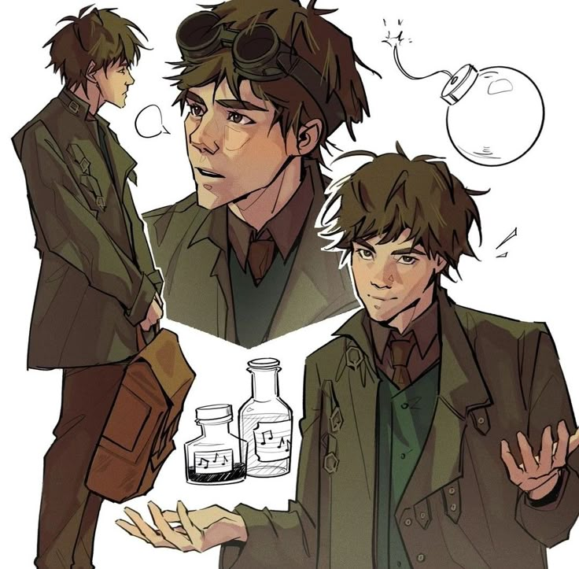
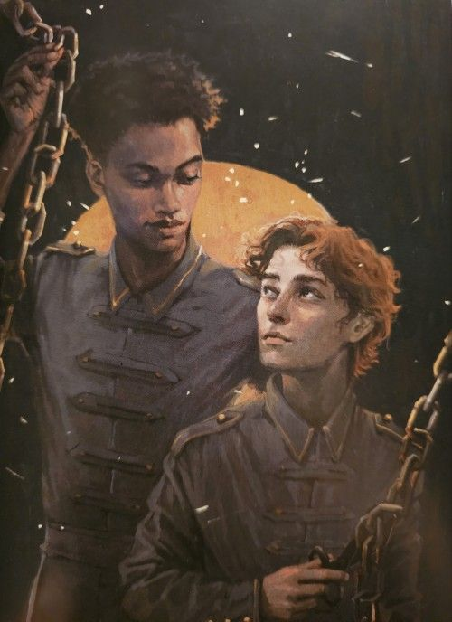
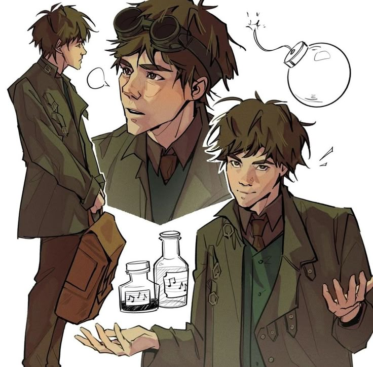
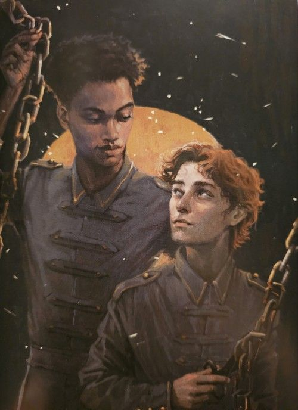
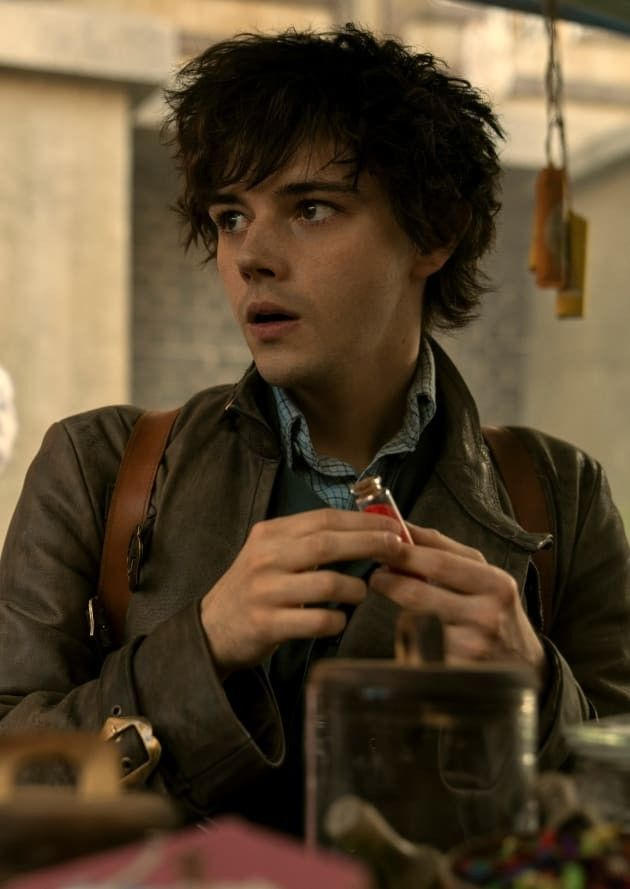
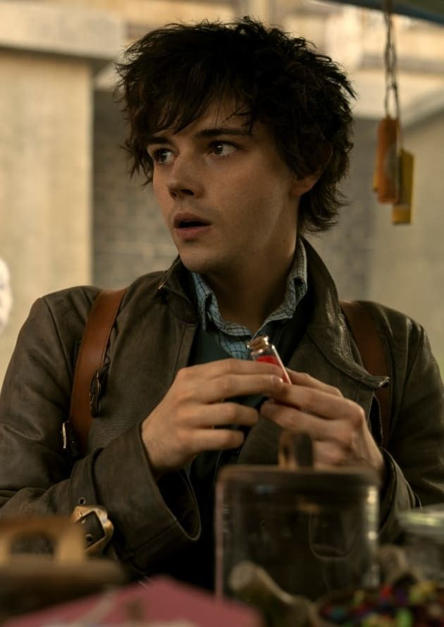
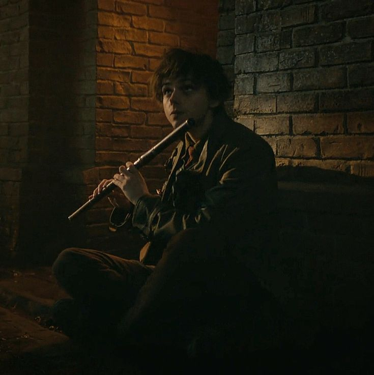
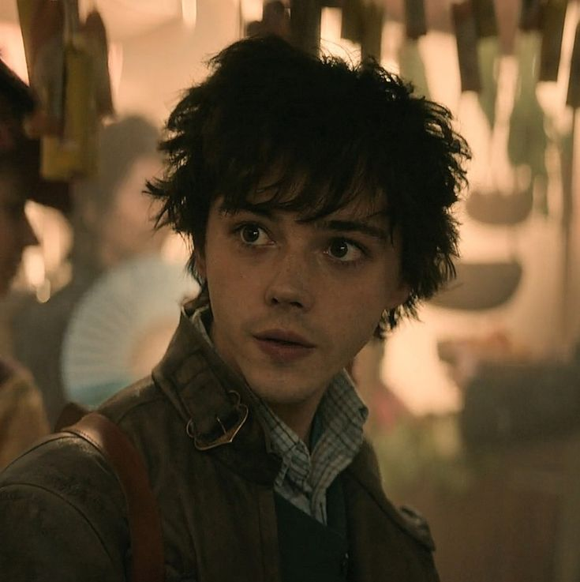
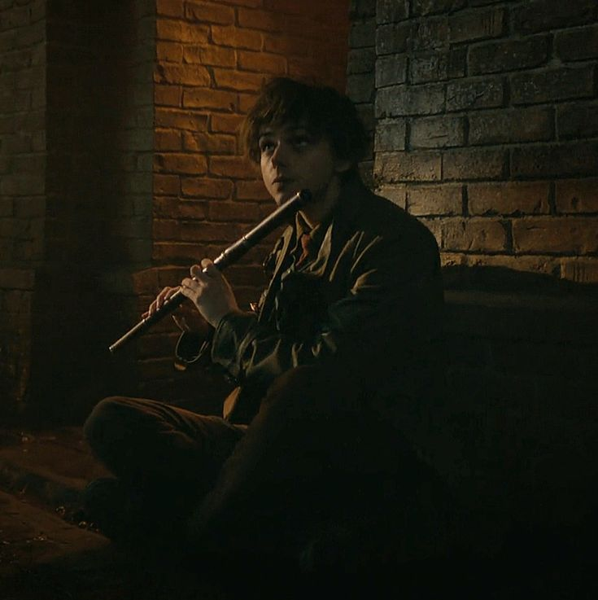
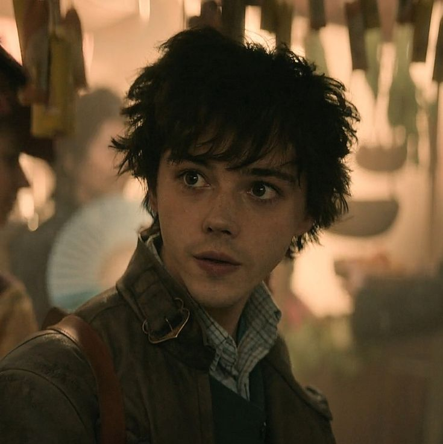

Уайлен Ван Эк
Подрывник, фабрикатор и самое доброе сердце команды
Уайлен Ван Эк — юный фабрикатор и эксперт по взрывчатке. Тихий, застенчивый и невероятно умный, он предпочитает говорить делами, а не словами.

Биография
Уайлен родился в богатой семье купца Яна Ван Эка, однако его детство было далеко от счастливого. Отец считал сына слабым и бесполезным, постоянно унижая его.
Спасением для Уайлена стала фабрикация — мир химии, механизмов и экспериментов, где он чувствовал себя уверенно и свободно.
Читать подробнее
После того как отец попытался избавиться от него, Уайлен оказался в Кеттердаме, где присоединился к команде Каза. Там он впервые нашёл людей, которые ценят его ум и доброту.
Внешность
У Уайлена были рыжевато-золотистые кудрявые волосы, бледная кожа и голубые глаза, и он был самым молодым в группе в возрасте шестнадцати лет. Его юный возраст только подчеркивается его внешностью, которая заставляет его казаться моложе. Матиас Хельвар считал, что ему двенадцать лет, а не шестнадцать.
Каз Бреккер описывал его как человека, который « выглядел как гладкокожий ребенок, с широко раскрытыми глазами, как щенок с шелковистыми ушками в комнате, полной бойцовых собак.»
Он очень похож на своего отца, Яна Ван Эка, но говорят, что у него кудряшки матери.
Благодаря способностям Нины к изменению внешности, усиленным Юрдой-паремом, Уайлен имел внешность Кювея Юл-Бо. Позже Женя Сафина меняет его облик на прежний, ближе к концу Продажного Королевства.
Характер
«Я могу быть полезным. Я правда могу.»
Уайлен довольно внимателен и невинен, несмотря на то, что он является частью Отбросов. Он самый добрый из всех Отбросов и очень заботливый, но расчетливый. Его привилегированный статус делает его непривычным к насилию; однако он все еще готов причинить вред — даже сказав в какой-то момент, после того как Джеспер сказал, что он не убивает спящих людей, что они могут разбудить двух человек, прежде чем убить их. Уайлен также достаточно застенчив, часто говорит и комментирует только тогда, когда его просят, хотя развитие его характера доказывает, что это происходит из-за того, что его отец обращается с ним более уверенно, когда он становится более уверенным в своей ценности.
Уайлен также обладает любопытством, созерцательным умом, часто задаваясь вопросом, как функционируют такие вещи, как пистолеты Джеспера и система акведуков Ледового двора. Он предпочитает музыку и цифры словам, так как не может читать из-за своей дислексии. Уайлен очень неуверенно относится к своей инвалидности. Это также связано с отторжением и ненавистью отца к нему из-за его неспособности читать или писать.
Он не любит, когда его сравнивают с преступником, но все же гордится своими подрывническими способностями. Он также является опытным химиком в дополнение к тому, что очень артистичен и искусен в игре на музыкальных инструментах (особенно на флейте и фортепиано) и рисовании.
Навыки и способности
- Фабрикация и химия
- Создание взрывчатых веществ
- Инженерное мышление
- Быстрое обучение
Интересные факты
- Уайлен плохо читает и пишет из-за дислексии
- Он боится громких звуков, но работает с взрывами
- Его отношения с Джеспером — одни из самых тёплых в команде
 



 

 


